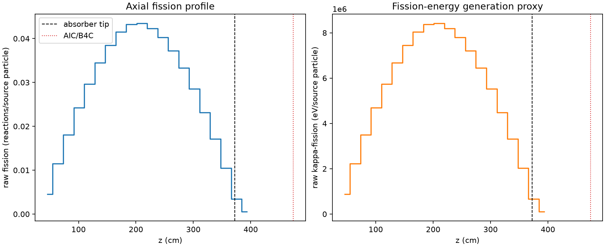
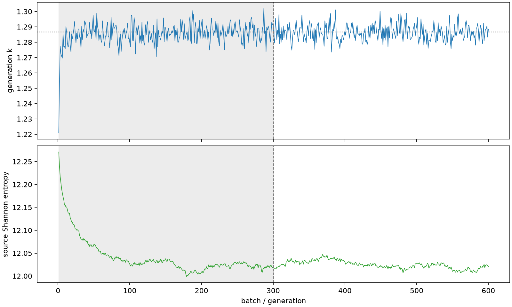

| field | value |
|---|---|
| experiment | V2-STAGE_256_OGRENCI_02-0013 |
| k | 1.2866073527442112 |
| MC standard error | 0.00017054406189618733 |
| seconds | 984.2954650629981 |
| acceptance | not_assessed |
| convergence | review_required |
Completed is output integrity only; physical and statistical review required. Zero tallies do not prove zero production or zero uncertainty.
| diagnostic | value |
|---|---|
| geometric fuel voxels | 5280 |
| zero fission tally voxels | 0 |
| low signal fuel voxels | 0 |
| low signal fission share | 0.0 |
| low signal kappa share | 0.0 |
| important fission share | 0.9500544713926599 |
| previous filter included | 5280 |
| duration estimate s | 1562.5173488400023 |
| actual minus estimate s | -578.2218837770042 |
| fission relative MC error | statistics |
|---|---|
| all_geometric_fuel | {"voxels": 5280, "positive_mean_voxels": 5280, "zero_mean_voxels": 0, "undefined_relative_error_voxels": 0, "median": 0.010027001922894723, "p95": 0.0345497040212496, "maximum": 0.08499455869844258} |
| low_signal | {"voxels": 0, "positive_mean_voxels": 0, "zero_mean_voxels": 0, "undefined_relative_error_voxels": 0, "median": null, "p95": null, "maximum": null} |
| important_95pct | {"voxels": 4054, "positive_mean_voxels": 4054, "zero_mean_voxels": 0, "undefined_relative_error_voxels": 0, "median": 0.009183071231257736, "p95": 0.013498568194184548, "maximum": 0.01720789250038568} |
| outside_previous_filter | {"voxels": 0, "positive_mean_voxels": 0, "zero_mean_voxels": 0, "undefined_relative_error_voxels": 0, "median": null, "p95": null, "maximum": null} |
| kappa_fission relative MC error | statistics |
|---|---|
| all_geometric_fuel | {"voxels": 5280, "positive_mean_voxels": 5280, "zero_mean_voxels": 0, "undefined_relative_error_voxels": 0, "median": 0.010016272978560913, "p95": 0.03451026671015745, "maximum": 0.08486392014982251} |
| low_signal | {"voxels": 0, "positive_mean_voxels": 0, "zero_mean_voxels": 0, "undefined_relative_error_voxels": 0, "median": null, "p95": null, "maximum": null} |
| important_95pct | {"voxels": 4054, "positive_mean_voxels": 4054, "zero_mean_voxels": 0, "undefined_relative_error_voxels": 0, "median": 0.0091738741162197, "p95": 0.013484612815618354, "maximum": 0.017191997527891766} |
| outside_previous_filter | {"voxels": 0, "positive_mean_voxels": 0, "zero_mean_voxels": 0, "undefined_relative_error_voxels": 0, "median": null, "p95": null, "maximum": null} |
| axial bin | fission share | kappa-fission share |
|---|---|---|
| 1 | 0.008580665346554184 | 0.008580991791042573 |
| 2 | 0.02187203703422877 | 0.021871835940862675 |
| 3 | 0.0343332085794936 | 0.034333076392073315 |
| 4 | 0.0461856168296804 | 0.04618553719364465 |
| 5 | 0.056447438132040395 | 0.05644738994332556 |
| 6 | 0.06563439328168656 | 0.06563422360809303 |
| 7 | 0.07317463930624943 | 0.07317445864917359 |
| 8 | 0.0790087216448526 | 0.07900866102782339 |
| 9 | 0.08227268585130502 | 0.082272599164824 |
| 10 | 0.08268662070670915 | 0.0826866287449367 |
| 11 | 0.08053029334972334 | 0.08053034450061078 |
| 12 | 0.07665437731485002 | 0.07665428263270793 |
| 13 | 0.07087852063737819 | 0.07087846884425227 |
| 14 | 0.06335057425870991 | 0.06335042862904973 |
| 15 | 0.05425891880536863 | 0.05425876185622144 |
| 16 | 0.04400381369995666 | 0.04400351855804645 |
| 17 | 0.032564513385171544 | 0.032564359509296245 |
| 18 | 0.01998596204253037 | 0.019985967544225523 |
| 19 | 0.006519581681243077 | 0.00652056321676789 |
| 20 | 0.0010574181122683956 | 0.001057902253022389 |
Histories include the inactive-to-active transition at batch 300. kappa-fission approximates fission energy production, not total heat deposition.

